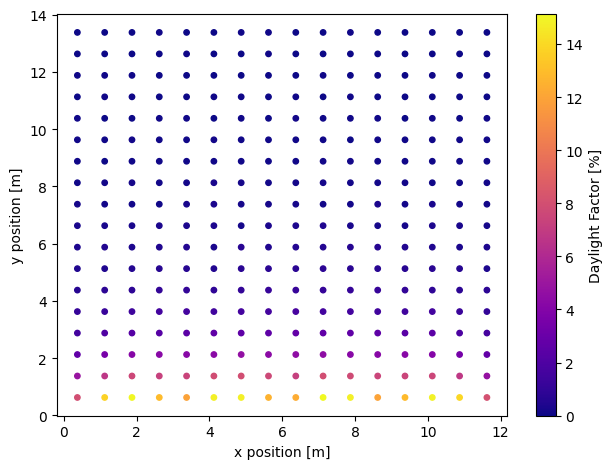

How to calculate daylight factor?
What is daylight factor?
Daylight factor (DF) is the ratio of the interior horizontal illuminance to the exterior unobsturcted horizontal illuminance under overcast sky conditions. The higher the daylight factor, the more daylight is available in the room. A minimum daylight factor of 2% is usually recommended for critical visual task zones.
Workflow
- Build a Radiance model
- Generate a CIE overcast sky
- Use raytracing to get the interior horizontal illuminance
- Compute the daylight factor
0. Import the required classes and functions
1. Build a Radiance model
If you already have a Radiance model setup, please have a octree file storing the scene files and continue on to the next step. If not, follow below to set up a sample Radiance model. See How to setup a simple rtrace workflow? for more details.
Use gen room (a command line function) to generate a simple Radiance model. The example 'aroom' is a open-office sized side-lit room with four same-sized windows. The room will be 12 meters wide, 14 meters deep, a floor to floor height of 4 meters, and a ceiling height of 3 meters. Each window is 2.5 meters in width and 1.8 meters in height and has a sill height of 1 meter. Windows are 0.4 meters apart from each other. Finally, the facade has a thickness of 0.1 meters.
! gen room 12 14 4 3 \
-w 0.4 1 2.5 1.8 \
-w 3.3 1 2.5 1.8 \
-w 6.2 1 2.5 1.8 \
-w 9.1 1 2.5 1.8 \
-t 0.1 -n aroom # (1)
gen roomis a command line function. To run shell commands from inside a IPython syntax (e.g. Jupyter Notebook), start the code with an exclamation mark (!).
Call pyradiance.oconv to generate a octree file storing the material and geometry files generated from the gen room command in the 'Objects' directory
fpaths = ["Objects/materials_aroom.mat",
"Objects/ceiling_aroom.rad",
"Objects/wall_aroom.rad",
"Objects/floor_aroom.rad",
"Objects/window_00_aroom.rad",
"Objects/window_01_aroom.rad",
"Objects/window_02_aroom.rad",
"Objects/window_03_aroom.rad",
]
2. Generate a CIE overcast sky
Use pyradiance.gensky to generate a CIE overcast sky. The function returns a brightness function (skyfunc) to vary the brightness of the glow material. We will assume the overcast sky has a diffuse horizontal illuminance of 10,000 lux (horizontal diffuse irradiance of 55.866 w/m2).
sky_func = pr.gensky(
dt=datetime.datetime(2024, 12, 21, 12, 0),
cloudy=True,
horizontal_brightness=dif_hor_ird, # (1)
)
print(sky_func)
- zenith brightness is computed from the horizontal diffuse irradiance (in watts/meter2)
sky_glow = "skyfunc glow sky_glow 0 0 4 1 1 1 0".encode()
sky = "sky_glow source sky 0 0 4 0 0 1 180".encode()
ground = "sky_glow source ground 0 0 4 0 0 -1 180".encode()
room_sky_octree = f"aroom_37_122_1221_1200.oct"
with open(room_sky_octree, "wb") as f:
f.write(pr.oconv(stdin=sky_descr, octree=room_octree))
3. Use raytracing to get the interior horizontal illuminance
Generate a grid of horizontal workplane sensors for interior horizontal illuminance computation. See How to setup a simple rtrace workflow? for more details.
floor_primitives = fr.unpack_primitives("Objects/floor_aroom.rad")
floor_polygon = fr.parse_polygon(floor_primitives[0])
grid = fr.gen_grid(floor_polygon, 1, 0.75)
Use pyrandiance.rtrace to compute ray tracing from the sensors. The function returns the irradiance results of all sensors in bytes.
option = ["-I+", "-ab", "5", "-ad", "512", "-aa", "0", "-lw", "0.001"]
rays = "\n".join([" ".join(map(str, row)) for row in grid])
ird_results = pr.rtrace(
rays.encode(), room_sky_octree, params=option, header=False
)
print(ird_results)
Each sensor data has rgb channels irradiance separated by '\t'
'4.386912e+00\t4.386912e+00\t4.386912e+00\t\n2.373928e+00\t2.373928e+00\t2.373928e+00\t ... 0.000000e+00\t0.000000e+00\t0.000000e+00\t\n'
rows = ird_results.decode().strip().split("\n")
data = [
[float(element) for element in row.split("\t") if element != ""]
for row in rows
]
ird_array = np.array(data)
Apply coefficients to convert irradiance into illuminance
illum = ird_array[:, 0] * 47.4 + ird_array[:, 1] * 119.9 + ird_array[:, 2] * 11.6 # (1)
- red: 47.4, blue: 119.9, green: 11.6
4. Compute the daylight factor
data visualization
fig, ax = plt.subplots()
x = [data[0] for data in grid]
y = [data[1] for data in grid]
_plot = ax.scatter(
x,
y,
c=df,
cmap="plasma",
s=15,
vmin=0,
vmax=max(df),
rasterized=True,
)
ax.set(
xlabel="x position [m]",
ylabel="y position [m]",
)
fig.colorbar(_plot, ax=ax, label="Daylight Factor [%]")
fig.tight_layout()
